The first figure following the title shows a panoramic view of the entire lecture board. The following note presents figures and transcript in the order they appear in the lecture. The RIGHT figure shows the line that is being discussed, and the LEFT figure shows that line in the context of the panorama.
Conditional Probability 1
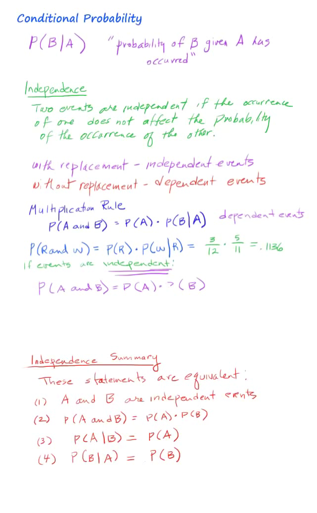
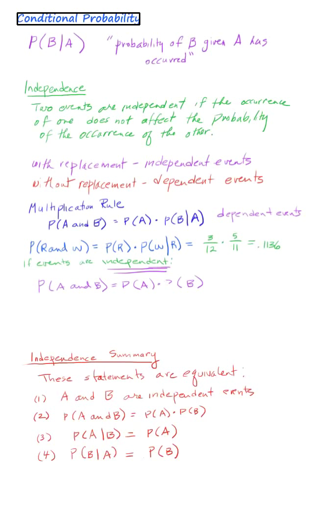
Conditional probability is involved with the multiplication rule.
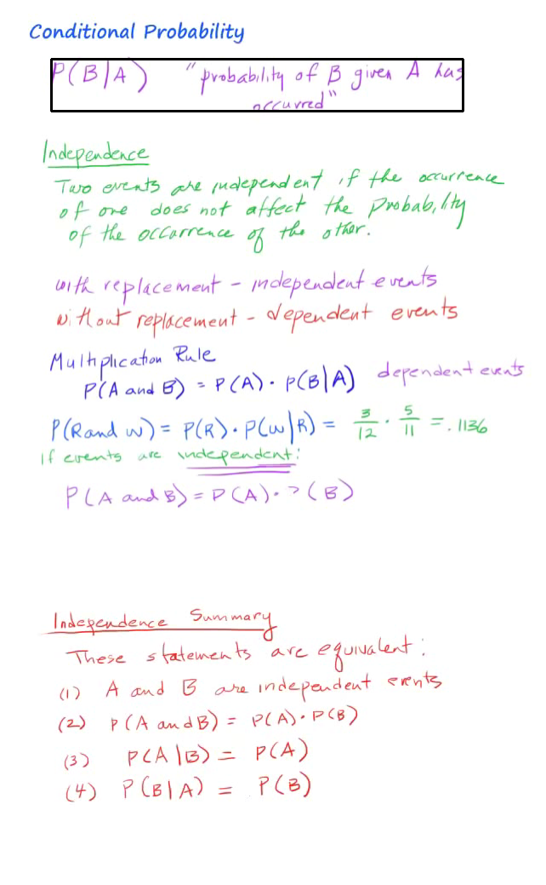
The notation for conditional probability is the probability of B given A. So this is it. A straight up-and-down line. So as I said it's the probability of event b given a has occurred. Okay.
What's the probability B happening given that we already know that A has occurred. Now probability involves a condition called independence.
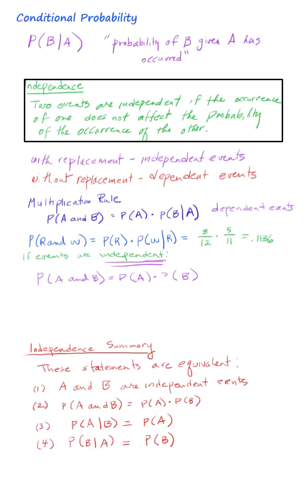
Two events are independent if the occurrence one does not affect the probability of the occurrence of the other. Thus they would be independent.
So, when we think of the example we saw with the balls and the urn and we were selecting two balls from the urn one at a time. Once we drew the first ball out if we put it back in then the probability on our next draw is not affected by the first withdrawal from the be urn because it were back to the beginning. The urn is just as it was before the first draw if you replace that first ball. So they would be independent. However as we saw with our example with the urn if you do not put the ball back in the urn then there is a change in the probability. It is affected on the second draw by the fact that you have gotten the first.
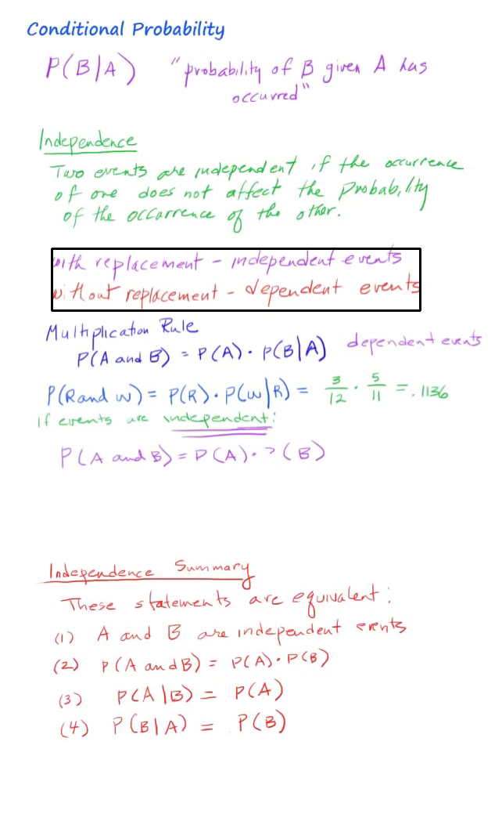
So what i'm saying is in when a procedure is with replacement we have independent events. If the procedure appears without replacement we say we have dependent events.
So our multiplication rule is written.
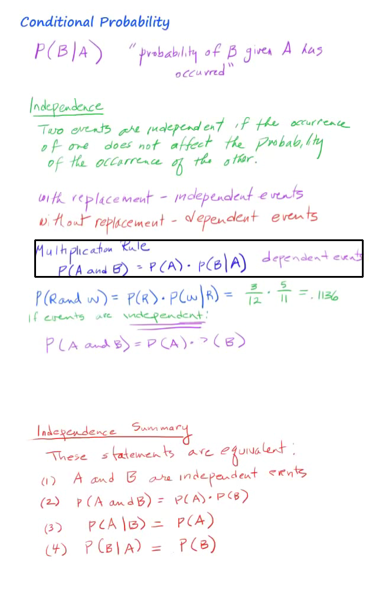
The probability remember this is A and B. The word and indicates multiplication rule. Is equal to the probability of a thats our first draw. Right. Times the probability of b given a has already occurred.
So if they're independent the probability of B given A is occurred is the same thing as the probability of B. If they are dependent events then we do make an adjustment for this condition. So returning to that example we had of the urn.
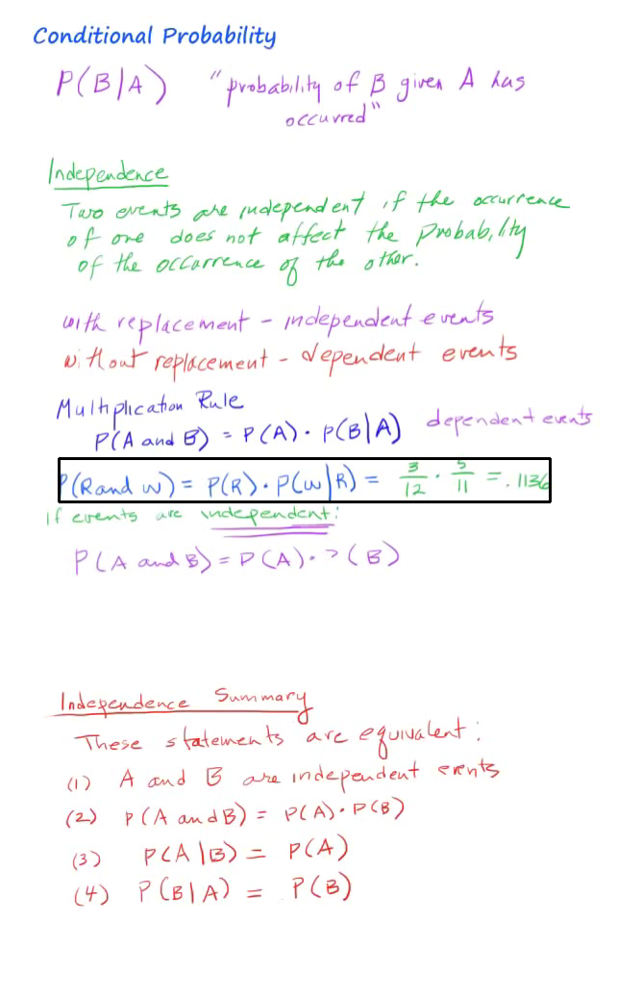
And we had we wanted the probability of red and white. We would say well that's the probability that the first one is red times the probability that the second one was White given that the first one was red. And remember when our situation was dependent events, what we saw was there were three Reds. So the probdability of red weas three Reds out of 12 balls in the urn times the probability of white. Well they're still five white balls in the urn but now what has changed is that there is only 11 balls total in the urn. So that's the probability of B given that a has already occurred. When a occurred one of these balls was taken out and set aside. And that's where we get any answer point 1 1 3 6.
okay. This was our case I think we called it well I don't think we labeled them. But that was the second case where we just mentioned that it was without replacement.
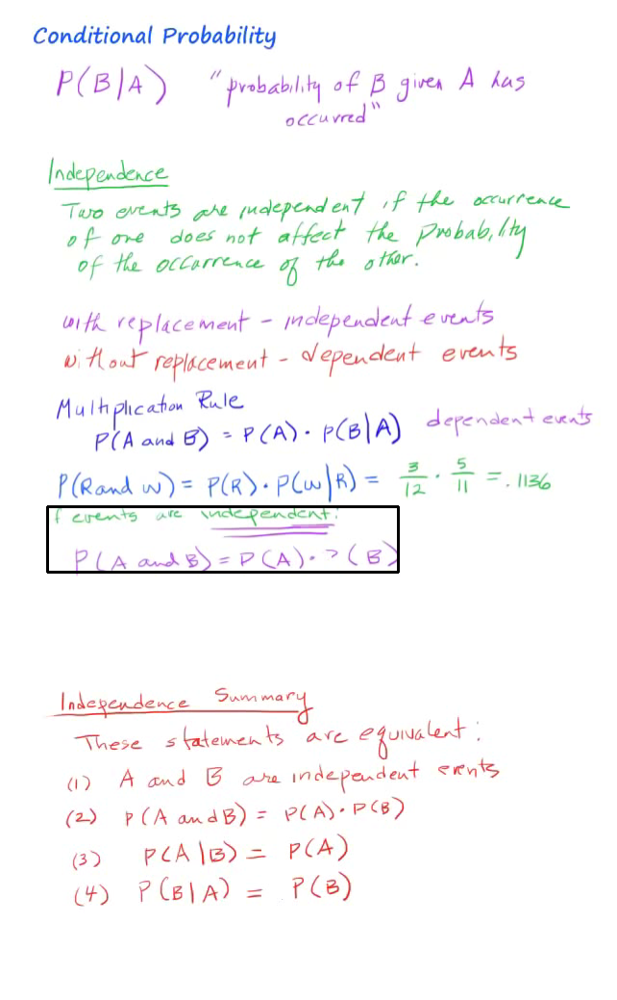
Now with replacement again if they are if events are independent. Then our multiplication rule is the probability of A and B is equal to the probability of A times the probability of B. Only if they're independent events because be has not been effective by A.
This works for both cuz you'll take that into consideration.
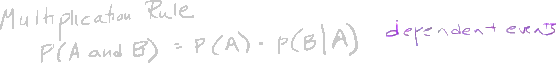
But I'll make a note here that this is specifically use for dependent events.
okay. are without replacement. So let's summarize what were saying here about independence. Just call this a independece summary.
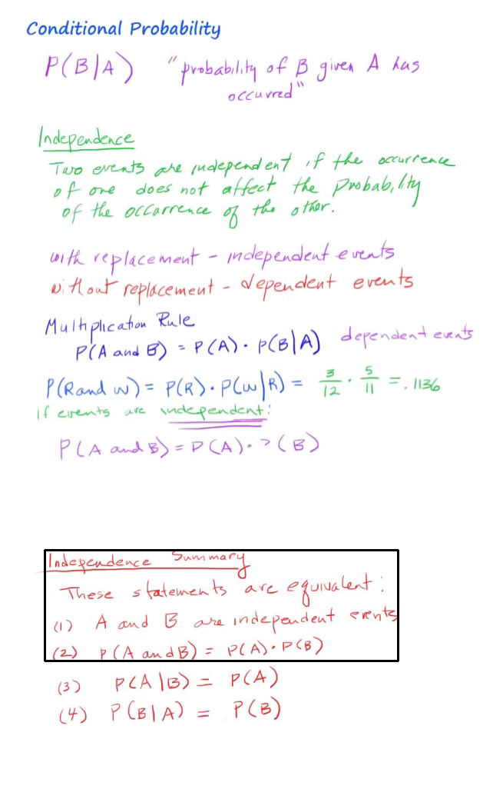
Okay. So these statements are equivalent. These statements I am about to write. First A and B are independent events. Or if that's true that's the same thing as saying the probability of A and B is equal to the probability of A times the probability of B.
That's the same thing as saying they are independent events.
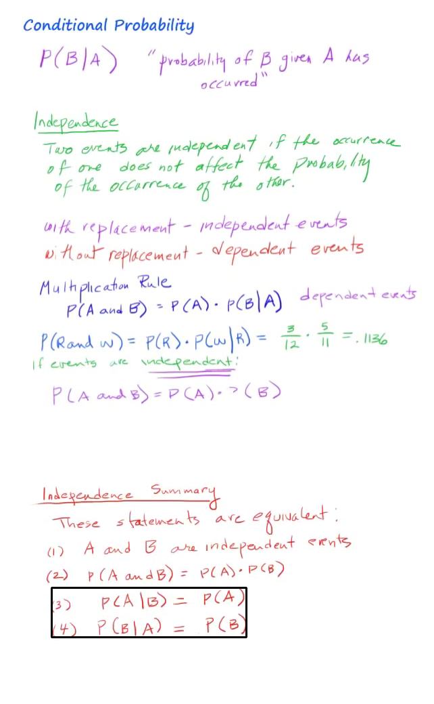
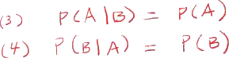
Well why can we say that? Well because the probability of A given B is the same thing as the probability of A. And the probability of B given A is the same thing is the probability of B. okay.
Don't miss these up. It does matter what order those are in. the probability that a occurs given that be has already occurred or the probability B occurs given that A has already occurred. And you can see how they and found are written based on independent events. That's what we're saying. Recall that's what we were saying previously that if they are independent events the probability that A given B is the same thing as probability of A. If they are independent events the probability b given a is the same thing as the probability of B. So that's our case with me return the ball to the urn after that first draw so it makes no difference it's not changing the outcome out for the probability of being occurring so these events would be independent. there's no condition of dependence there.